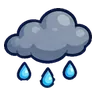

ผีขุดหลุม
มอนธาตุวิญญาณ Lv 30–38
เจอที่
| แมพ | โซน | Lv | ในแมพ | ภูมิภาค |
|---|---|---|---|---|
| สุสานเก่าหลังเนิน | สุสานหลวงเก่า | 30–38 | ≈21 | ป่ากองไฟ |
| บ้านผู้เฝ้าสุสาน | หน้าบ้านผู้เฝ้า | 30–38 | ≈16 | ป่ากองไฟ |
| หุบหมอกโลงศพ | 30–38 | ≈9 | ป่ากองไฟ |
≈ จำนวนที่อยู่ในแมพพร้อมกันโดยเฉลี่ย คิดจากไฟล์เกม (จุดเกิดของแมพ × 4 แบ่งตามสัดส่วนของแต่ละตัว) ตายแล้วเกิดใหม่ที่เดิมใน 22 วินาที · ตอนเล่นออนไลน์เซิร์ฟเวอร์เป็นคนเกิดมอน อาจไม่ตรง
ค่าสถานะตามเลเวล
| Lv | HP | ATK | DEF | MDEF | EXP | Job |
|---|---|---|---|---|---|---|
| 30 | 3,074 | 53–79 | 12 | 5 | 43 | 32 |
| 34 | 4,213 | 63–95 | 14 | 6 | 48 | 36 |
| 38 | 5,719 | 76–114 | 15 | 7 | 52 | 39 |
ตีด้วยธาตุไหนดี
แรงขึ้น: วิญญาณ ×1.25
เบาลง: ไม่มีธาตุ ×0.25
วัตถุดิบที่ดรอป
| ของ | โอกาส | |
|---|---|---|
| หัวพลั่วขึ้นสนิม | 55% | 1 ชิ้น (15% ได้ 2) |
อุปกรณ์ที่ดรอป (4)
| ของ | โอกาส |
|---|---|
| 0.25% | |
| 0.12% | |
 เมฆฝนจิ๋ว | 0.08% |
| 0.06% |
สกิล
วาร์ป (Lv 25+) · วาร์ป (Lv 60+) · ม่านเวท (Lv 60+)